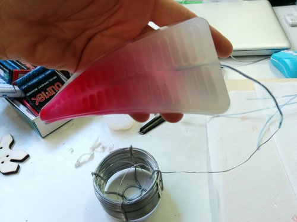

Project development
Documentation structure
1- General design2- General structure and iterations
3- Molding
4- Casting iteration and silycon extra soft in depht
5- Electronics, wiring and programming
6- Results
The Breathing Pod


1 // General design

The breathing pod is a device made by a general plywood structure with an electro air pump in its center that inflates air into 3 soft actuators casted in extra soft silycon. The pump is controlled by an air quality sensor, the MQ7, that cyclically reveals the level of Carbon Dioxide detected in the air nearby and make the pump and a set of RGB LEDs behaving according to the data detection of the sensor. In the original project, those detected data should have been sent to an online data repository for citizen science, throug the use of a micro wifi embedded electronics feleer.
A FabKit is enough to control the whole system. The only added boards are those necessary to convert current voltage from a general 12V battery that would have powered all boards and the pump. For the final presentation I hadn't enough time to implement these feature, as the one for data online trasmission, because I used just the bench supply for the pump and a 5V puwer supply for the FabKit.
2 // General structure and iterations
The structure of the Pod has been designed using a CAD and entirely made by 5 mm tick plywood interlocking elements all laser cut.

The design consists in a triangle in which the center host a space for locating the pump and its related wires. All the hardware is coinceived to be located externally to the pod.
Even if I decided to use an electro pump, I made my tests on the initial prototypes iterations using a simple sirynge.
Initially, I struggled a bit to understand how to hang the silycon muscles to the wooden structure. Indeed, neighter glue nor other tricks are working to stick a silycon element, except other silycon. But I didn't want to use glue so I went for a pressure strategy, building a top elements screwed to the general structure and keeping still the muscles.
I used M3 screws for the whole pod. Under the top element, I designed little holes to locate RGB LEDs. Their wiring (4 wires) are instead located internally the central Pod void that hosts pumps and wires groups.
Before getting the final design, I passed through 3 initial iterations. The final one is the fourth.
3 // Molding
I designed the molds during the Molding and Casting academy module and I milled them on purple machinable wax using this setting for the big milling machine.
- diameter: 2 mm
- pass depht: 1 mm
- Stepover: 40 %
- Spindle speed: 18000 rpm (to be lowered and fine tuned manually)
- feed rate: 6000 mm/min (since the machine works with in minutes units)
- plunge: 1500 mm/min (same reason)
Here a video recap of the whole process on how to mold and cast a PnauNetz soft robot.
4 // Casting iteration and silycon extra soft in depht
This part of the project development has been to most tricky and complex because affected a lot the available time. I scheduled to proceed in a very linear and fast way for the casting part of the project. Indeed, I discovered a lot of things that I didn't predicted and this changed the final result that I obtained. But in a way, I learned a lot of things on extra soft silycon and how to proceed in future to make this kind of device again.
In the image, I reported all the material I used to cast my soft actuators. The silycon Dragon Skin made by Smooth-On wasn't the right one in my case. Indeed, it worked very well but the final result wasn't enough soft to be inflated with my tiny pump. Meaning: i had to purchase a softer product, and I went for Smooth-On EcoFlex 00-30, the middlle softness of their extra soft products line. I think that this was instead too soft and that the best result could be achieved using EcoFlex 00-50. For next attempts!
These silycons must be pured with a 1:1 ratio. Each of my muscles requires 54 gr of silycon. The product reported in the image 1 is a pigment for silycon, to pur colour the silycon. You need to use less than the 3% of the general silycon quyantity you are going to cast. It is very powerful. A last very important product is the Sil-Poxy glue that is necessary to seal the muscle after the tubing. Below the whole process in details.

4.1 // PneuNetz diseases
The most incredible thing is that during this casting process I discover a kind of disease, a kind of inborn deformation that affected two of my three muscles. As the image below shows, only the central muscle can be considered "sane". Indeed, the other two get not inflated in their superior part but only close to the tip, and in that point they show a very thin silycon layer that is super deformable and, as I will discover once connected the electo pump, able to "suck" that whole inflated air, leaving the others almost empty and not inflated.

This discovery made me casting one more muscle that wasn't showing the deformation. So, to recap: on 4 muscle than I have casted using same quantity of same material and same molds, 2 of them were presenting a deformation, and two were "sane". I am quite of sure that the problem is not related to quantity of material or casting methodes or errors. The problem I think is basically that to be sure of casting 3 elements with same features, it is important to cast them in the same moment, provided that you have enogh mold to make them during the same process, at least the main body part. When close to presentation I realized that my device wasn't working as I planned because of this deformation, the only solution I found was to try making one more muscle. But then, the risk of having again a diseased muscle was too high. And this silycon is super expensive.
Next step has been connecting the three muscles to the single inflating point of the electro pump. This has been also an project issue that I underestimated. I tried many options before jumping on the final one. The problem was that, since the pump is just for inflating and not for deflating, I had to create a leak in the connection system in order to make a mechanic deflation of the muscles once the inflating process was over. I used a neddle drip that worked perfectly fro deflating the muscles system.
5 // Electronics, wiring and programming
I soldered a lot of cable to connect the LEDs to long wires and I places a 230 ohm resistor on each wire. I grouped the 3 wire (R, G, B) of each LED into single groups and loacted them inside the POD structure. As LED ground cable, I used just one connected to all the LEDs.
Each LED cables group was inserted in the top element.
I made clear the position of each pin in the microcontroller board but I used and arduino uno with an xbee pro shield on it to test the code.
Indeed, since to program the FabKit I need several pins, I needed to finalize the code in a more agile and fast way so I used the Arduino Uno.
5.1 // Programming
Breathing_Pod.ino
int pompa = 4; // posiziona pin pwn su arduino _ pin1 su fabkit
int MQ7 = A1; // su analog non ho bisognpo di specificare se ooutput o input
int gas = 0; //inizializa la lettrua a zero
int valgas = 0; //inizializa la lettrua a zero
int ambient = 0;
const int ledR = 12; // pin digitale dove ci saràil R del LED
const int ledR1 = 11;
const int ledR2 = 10;
const int ledB = 9;
const int ledB1 = 8;
const int ledB2 = 7;
const int ledG = 6;
const int ledG1 = 5;
const int ledG2 = 4;
const int delayRED = 9000;
const int delayBLUE = 4500;
const int delayGREEN = 1000;
const int restore = 2000;
void setup () {
Serial.begin (9600);
pinMode (pompa, OUTPUT);
pinMode (ledR, OUTPUT);
pinMode (ledR1, OUTPUT);
pinMode (ledR2, OUTPUT);
pinMode (ledG, OUTPUT);
pinMode (ledG1, OUTPUT);
pinMode (ledG2, OUTPUT);
pinMode (ledB, OUTPUT);
pinMode (ledB1, OUTPUT);
pinMode (ledB2, OUTPUT);
digitalWrite (pompa, LOW);
}
void loop () {
// We read the gas data, and behave accordingly
valgas = analogRead(MQ7);
Serial.println(valgas);
if (valgas <= 200)
{
// Use the pump
pompaOn ();
Pompa
ledRon();
delay (delayRED);
pompaOff ();
delay (delayRED+restore);
ledRoff ();
}
else if (valgas > 200 && valgas <= 250)
{
// Use the pump
pompaOn ();
// delay (7000); // questo valore è quello che serve al muscolo per gonfiarsi che trovo empiricamente
ledBon();
delay (delayBLUE);
pompaOff ();
delay (delayBLUE+restore);
ledBoff ();
}
else if (valgas > 250)
{
// Use the pump
pompaOn ();
delay (1000); // This is the time the muscle needs to get inflated
ledGon();
delay (delayGREEN);
pompaOff ();
delay (delayGREEN);
pompaOn (); Pompa
delay (delayGREEN);
pompaOff ();
delay (delayGREEN+restore);
ledGoff ();
}
}
LED_Green.ino
void ledGon () {
digitalWrite (ledG, HIGH);
digitalWrite (ledG1, HIGH);
digitalWrite (ledG2, HIGH);
}
void ledGoff () {
digitalWrite (ledG, LOW);
digitalWrite (ledG1, LOW);
digitalWrite (ledG2, LOW);
}
LED_Red.ino
void ledRon () {
digitalWrite (ledR, HIGH);
digitalWrite (ledR1, HIGH);
digitalWrite (ledR2, HIGH);
}
void ledRoff () {
digitalWrite (ledR, LOW);
digitalWrite (ledR1, LOW);
digitalWrite (ledR2, LOW);
}
LED_Clue.ino
void ledBon () {
digitalWrite (ledB, HIGH);
digitalWrite (ledB1, HIGH);
digitalWrite (ledB2, HIGH);
}
void ledBoff () {
digitalWrite (ledB, LOW);
digitalWrite (ledB1, LOW);
digitalWrite (ledB2, LOW);
}
MQ7.ino
void leggigas () {
gas = analogRead (MQ7);
Serial.println (gas);
}
gas_evaluation.ino
void gasreport () {
if (valgas <= 200)
{
ambient = 0;
}
else if (valgas > 200 && valgas < 250)
{
ambient = 10;
}
else if (valgas > 250)
{
ambient = 20;
}
}
pump.ino
void pompaOn () {
Serial.println ("pompa ON");
digitalWrite (pompa, HIGH);
delay (20);
}
void pompaOff () {
digitalWrite (pompa, LOW);
delay (100);
}